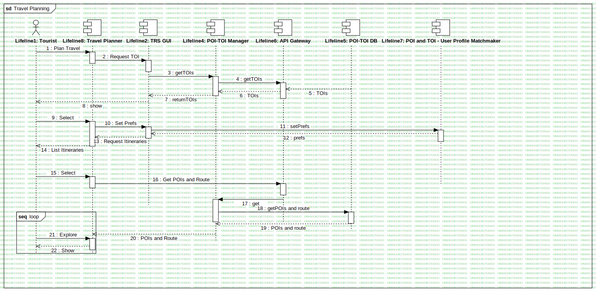

Travel Planning
UMLInteraction
RASTA
::
Requirement Analysis
::
OR6 - Itinerari turistici Parco Nazionale Abruzzo
::
Sequence - Travel Planning
::
Travel Planning
Description
none
Diagrams

Travel Planning
Fragments
loop
Participants
Lifeline1: Tourist
Lifeline2: TRS GUI
Lifeline3: POI Manager
Lifeline4: POI-TOI Manager
Lifeline5: POI-TOI DB
Lifeline6: API Gateway
Lifeline7: POI and TOI - User Profile Matchmaker
Lifeline8: Travel Planner
Messages
Plan Travel (Lifeline1→Lifeline8)
Request TOI (Lifeline8→Lifeline2)
getTOIs (Lifeline2→Lifeline4)
getTOIs (Lifeline4→Lifeline6)
TOIs (Lifeline5→Lifeline6)
TOIs (Lifeline6→Lifeline4)
returnTOIs (Lifeline4→Lifeline2)
show (Lifeline2→Lifeline1)
Select (Lifeline1→Lifeline8)
Set Prefs (Lifeline8→Lifeline2)
setPrefs (Lifeline2→Lifeline7)
prefs (Lifeline7→Lifeline2)
Request Itineraries (Lifeline2→Lifeline8)
List Itineraries (Lifeline8→Lifeline1)
Select (Lifeline1→Lifeline8)
Get POIs and Route (Lifeline8→Lifeline6)
get (Lifeline6→Lifeline4)
getPOIs and route (Lifeline4→Lifeline5)
POIs and route (Lifeline5→Lifeline4)
POIs and Route (Lifeline4→Lifeline8)
Explore (Lifeline1→Lifeline8)
Show (Lifeline8→Lifeline1)
sendPrefs (Lifeline2→Lifeline7)
selectItinerary (Lifeline1→Lifeline2)
Properties
Name
Value
name
Travel Planning
stereotype
null
visibility
public
isReentrant
true
Owned Elements
Travel Planning